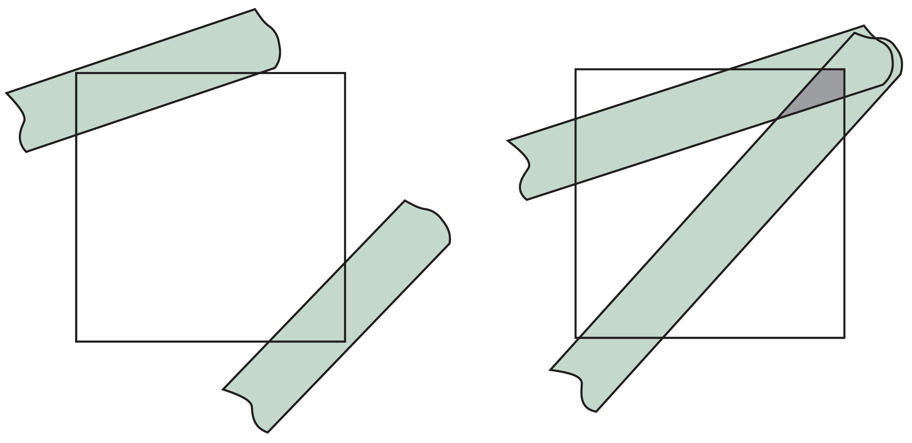

计算机图形学
第七章 离散技术
合成和混合
合成和混合
概述
合成和混合利用了RGBA中的”A"分量，通过对每个像素的”A“通道的值进行设置，可实现透明表面混合、图像效果合成、抗锯齿效果等
合成和混合
不透明度
平面的
合成和混合
物理模型
如果完全依照物理模型实现半透明效果，考虑到光和物体间交互模型的复杂度，利用传统的流水线渲染计算复杂度很高
合成和混合
写入模型
往面片着色器写入面片颜色时，采用RGBA中的第四分量保存面片的透明度。在渲染时，可对着色器写入模型进行扩展，使其支持对RGBA值的写入

合成和混合
混合等式
设有源和目标像素颜色分别以RGBA表示为四元向量，记为
$$
src=\begin{bmatrix}s_r&s_g&s_b&s_a\end{bmatrix}
$$
$$des=\begin{bmatrix}d_r&d_g&d_b&d_a\end{bmatrix}
$$
记源和目标像素混合因子分别为
$$
b=\begin{bmatrix}b_r&b_g&b_b&b_a\end{bmatrix}
$$
$$
c=\begin{bmatrix}c_r&c_g&c_b&c_a\end{bmatrix}
$$
则可用混合操作$d'$替代目标像素的颜色$d$，有
$$
d=\begin{bmatrix}b_rs_r+c_rd_r&b_gs_g+c_gd_g&b_bs_b+c_bd_b&b_as_a+c_ad_a\end{bmatrix}
$$
合成和混合
WebGL实现
WebGL中实现混合，需遵循下列步骤：
- 首先，打开WebGL中的混合开关，调用gl.enable(gl.BLEND)
- 设定所需的源和目标混合因子，调用gl.blendFunc(sourceFactor, destinationFactor)，WebGL中已定义了一系列因子，包括1(gl.ONE)，0(gl.ZERO)， 源$\alpha$(gl.SRC_ALPHA) 和$1-\alpha$(gl.ONE_MINUS_SRC_ALPHA)，目标$\alpha$(gl.DST_ALPHA) 和$1-\alpha$(gl.ONE_MINUS_DST_ALPHA)
合成和混合
WebGL实现混合示例
假设有不透明的背景色$(R_0,G_0,B_0,1)$，作为最初的目标颜色，拟与半透明的多边形进行混合，颜色为$(R_1,G_1,B_1,\alpha_1)$，选择GL_SRC_ALPHA和GL_ONE_MINUS_ALPHA分别作为源和目标混合因子，有$R'_1=\alpha_1R_1+(1-\alpha_1)R_0...$，根据该公式得到的结果可以是不透明的，也可以是半透明的
合成和混合
精度问题
RGBA中每个分量的值都通过正则化转化为(0,1)之间的浮点数，但由于在一些系统中，RGBA值以8位整数存储，如果将许多分量进行叠加，会造成精度的损失。比如，将n幅图像叠加，将所有的分量都除以n以避免超出(0,1)的范围，混合时将源和目标混合因子均设置为1，但是除以n时就会造成精度的丢失
合成和混合
混合顺序

上图的透明立方体渲染图可能是错误的。所有的多边形是以在流水线中处理的顺序进行渲染，混合函数的实现效果也和混合的顺序有关
合成和混合
再说不透明多边形
对于一组部分透明而部分不透明的多边形而言，如何正确地运用隐面消除算法获得正确的渲染结果？不透明的多边形会遮挡住后方所有的多边形，并影响深度缓存的值，而透明的多边形则不应影响深度缓存的取值，即渲染时，需要将深度缓存检测设置为false，有gl.depthMask(false)将深度缓存设置为只读。同时，为获得正确的结果，在渲染之前需要将多边形按照深度排序，以消除渲染顺序对渲染结果的影响
合成和混合
雾
雾，可以用固定颜色，结合与距离相关的混合因子实现模拟。令源的颜色为$C_s$，雾的颜色为$C_f$，混合因子为$f$，有$C_s'=fC_s+(1-f)C_f$，其中$f$的取值计算可以有多种形式，如线性形式、高斯形式、指数形式等。目前已不再使用

合成和混合
混合和HTML
混合效果因环境和版本各异。桌面版OpenGL，“A”分量需要启用混合才有效。WebGL中，因为WegBL是通过HTML5的Canvas起作用，任何非1.0的“A”值都会有效。A=0.5会令所有的RGB值减半，并且也会使同样使用Canvas的其它应用产生同样的效果
合成和混合
线条走样
绘制直线时，采用1个像素宽度，除了垂直和水平的线条外，都有可能需要覆部分像素区域，简单的绘制算法则会直接覆盖整个像素区域，造成线条看起来充满了锯齿感，不仅直线，平面上多边形也存在同样的问题，此种问题称为“走样”

合成和混合
反走样
作为“A”通道最重要的应用之一，反走样的基本思想是像素着色时考虑增加一个因子，该因子可以取决于像素被覆盖的区域大小，还需要考虑是否有重叠区域
若有重叠区域，可考虑采用面积平均，利用面积区域$\alpha_1+\alpha_2-\alpha_1\alpha_2$作为混合因子

合成和混合
OpenGL反走样
桌面版本OpenGL支持反走样，但是在WebGL版本中目前还不支持，但可以通过对点、线、多边形分别启用实现，而大部分硬件也能够自动实现反走样处理
glEnable(GL_POINT_SMOOTH);
glEnable(GL_LINE_SMOOTH);
glEnable(GL_POLYGON_SMOOTH);
glEnable(GL_BLEND);
glBlendFunc(GL_SRC_ALPHA, GL_ONE_MINUS_SRC_ALPHA);